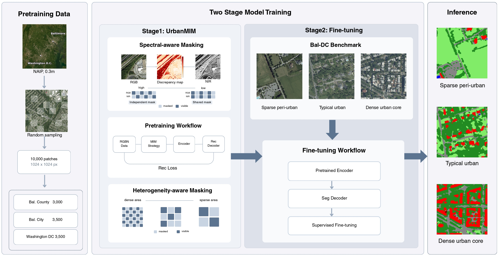
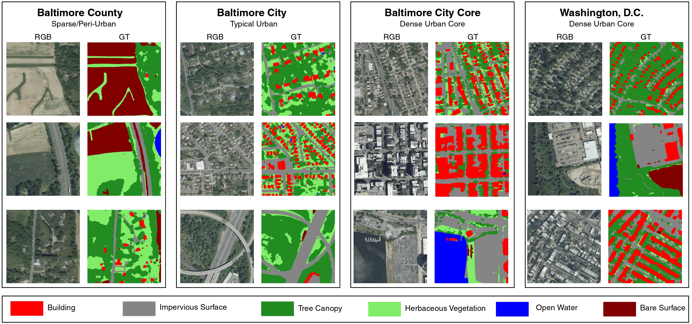

Bal-DC LULC Atlas
Toward a Foundation Model for Ultra-High-Resolution Urban Land-Cover Classification
1 Towson University 2 University of Maryland, Baltimore County
Abstract
Ultra-high-resolution (UHR) remote sensing imagery provides the spatial detail needed for fine-grained urban land-cover understanding in complex urban environments. However, existing methods are still mostly based on coarser-resolution settings or focused on downstream model adaptation for UHR imagery, without representation learning strategies designed for the unique characteristics of UHR data. In this paper, we introduce Bal-DC LULC Atlas, a framework for UHR urban land-cover understanding built on large-scale NAIP imagery. Bal-DC LULC Atlas consists of two key components: (1) UrbanMIM, a masked image modeling pretraining strategy designed for UHR urban data to capture multispectral complementarity and spatial heterogeneity in UHR imagery; and (2) the Bal-DC LULC Benchmark, a large-scale annotated benchmark for UHR urban data covering Baltimore and Washington, D.C., with 5 billion labeled pixels for systematic evaluation in complex urban environments. Extensive experiments on this benchmark show that the proposed approach learns representations that capture fine-grained and compositional spatial structures, leading to improved performance on urban land-cover understanding tasks. These results highlight the importance of UHR-specific representation learning for urban land-cover understanding.
Framework

Bal-DC LULC Atlas connects UHR-specific masked image modeling, benchmark fine-tuning, and large-scale urban land-cover mapping.
Bal-DC LULC Benchmark
The benchmark covers diverse urban environments from sparse peri-urban landscapes to dense urban cores, with six land-cover classes annotated on 0.3 m RGB–NIR NAIP imagery.

- Building
- Impervious Surface
- Tree Canopy
- Herbaceous Vegetation
- Open Water
- Bare Surface
Interactive Atlas
- Building
- Impervious Surface
- Tree Canopy
- Herbaceous Vegetation
- Open Water
- Bare Surface
Zoom and pan to explore NAIP RGB imagery and UrbanMIM land-cover predictions across Baltimore and Washington, D.C.